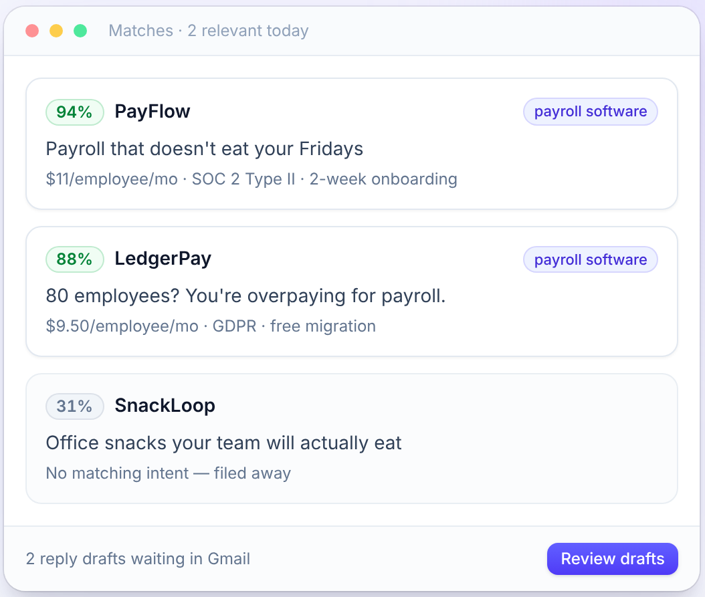
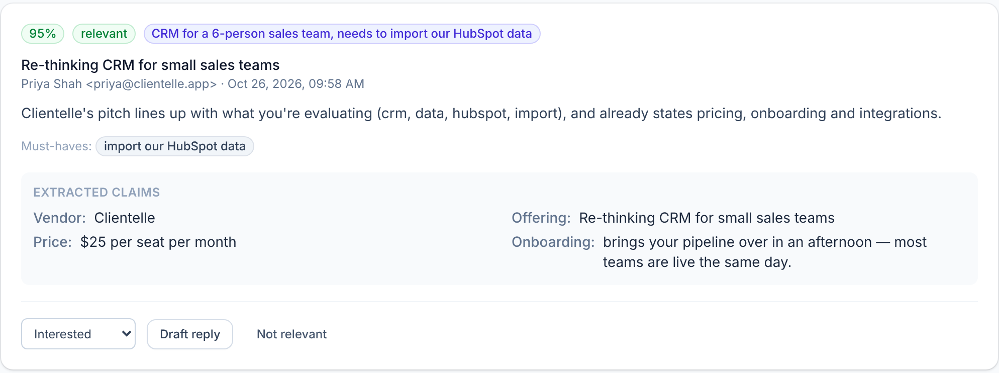

Catch the pitch.
Manciple recognizes outreach wherever it arrives and checks whether it relates to something you're buying.
THE BUYER'S AGENT
Manciple works from what you're actually buying. It screens pitches, asks better questions, and turns outreach into a decision you can make with confidence.
Working Gmail product today. Built for a much bigger future.
Sales teams have software to find you, message you, call you, and follow up. Buyers have a spam filter and a block button. Both treat the vendor you need like the hundred you don't.
The answer isn't to stop listening. It's to have someone listening for you.
The buyer's brief becomes the filter. Every vendor has to answer the same questions, so you can compare evidence instead of marketing.
“Payroll for about 80 people. Under $15 per employee. Must be SOC 2 and work with QuickBooks.”
Manciple recognizes outreach wherever it arrives and checks whether it relates to something you're buying.
Relevant vendors face the same questions about price, fit, setup, security, and what's still missing.
Claims and answers sit side by side. Manciple gathers and compares; you decide what happens next.
Email is the start. The vision reaches the inboxes, phones, events, and loose ends where real vendor conversations happen.
Connect Gmail. Manciple detects sales outreach, scores it against your buying needs, extracts claims, and drafts replies for your review. Read and draft permissions only; it does not send for you.
GMAIL → RELEVANCE → CLAIMS → DRAFTSBring messages and InMail into the same buyer context. The plan starts with notification emails and user-provided imports, then explores opt-in, read-only computer use. You send any reply yourself.
MESSAGES → FIT → SUGGESTED REPLYManciple Answers would take unknown calls, learn who's calling and why, decline unwanted pitches, or question vendors that match your brief. You get a useful summary instead of another voicemail.
CALL → CONVERSATION → SUMMARYUnknown senders and promotional texts would be scored against your intent, with scams flagged and unwanted outreach easy to decline.
TEXT → SCREEN → KEEP OR DECLINEYour Manciple Code would replace the badge scan with a structured front door. A vendor reads the brief you choose to share, answers your questions, and enters the same comparison as everyone else.
EVENT → CODE → STRUCTURED OFFERThe same email pipeline, extended beyond Gmail so your buying brief follows you into the other major business inbox.
OUTLOOK → SAME BUYER PROFILEForward a pitch, share a screenshot, snap a brochure, or capture vendor outreach from shared Slack and Teams channels or calendar invites. It should still land in the same decision room.
ANY FORMAT → ONE BUYER'S VIEWRoadmap concepts are shown as planned. Only the Gmail workflow is working today.
Meet the buyer's agent in 28 seconds.
WORKING GMAIL PRODUCT
Manciple already reviews sales email against your buying needs. It turns a crowded inbox into relevant matches, useful questions, and vendor comparisons. You stay in control of every reply.


If a seller emails, calls, messages, and meets you at an event, it should become one record, not four interruptions. The long-range product brings every answer into a single comparison.
Cross-channel view shown as a vision concept. Today's comparison works with email.An unknown caller reaches Manciple Answers. It identifies the caller, asks what matters to you, and returns a concise call summary. Unwanted pitches get a polite decline and a do-not-call request.
“We do payroll for growing teams.”
“What's your price per employee? Are you SOC 2?”
At a conference or anywhere else, a vendor would see the brief you choose to share, answer your standard questions, and enter your decision room. Your contact details stay private until you say yes.
Manciple gathers, scores, and drafts. It never buys, signs, or commits on your behalf.
Your buying needs are yours to share. Buyer data is never sold. Vendors never pay to rank higher.
The planned voice agent will identify itself as AI. Today's Gmail agent drafts replies but never sends them.
We're building with people who know what it feels like to be pitched from every direction. Tell us what you buy and where the noise finds you.
Talk to us